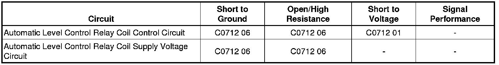

C0712
DTC C0712
Diagnostic Instructions
* Perform the Diagnostic System Check - Vehicle (Initial Inspection and Diagnostic Overview) prior to using this diagnostic procedure.
* Review Strategy Based Diagnosis (Initial Inspection and Diagnostic Overview) for an overview of the diagnostic approach.
* Diagnostic Procedure Instructions (Initial Inspection and Diagnostic Overview) provides an overview of each diagnostic category.
DTC Descriptors
DTC C0712 01
- Level Control Compressor Relay Circuit Short to Battery
DTC C0712 06
- Level Control Compressor Relay Circuit Short to Ground or Open Circuit
Diagnostic Fault Information

Circuit/System Description
The electronic suspension control module (ESCM) adjusts the vehicle suspension ride height. The ESCM determines the height of the vehicle based on the voltage from the suspension position sensors. The module grounds the ELC relay and the exhaust control solenoid to raise and lower the vehicle in order to keep the vehicle level.
Conditions for Running the DTC
* The ESCM is powered up.
* The ESCM is commanding the compressor ON.
Conditions for Setting the DTC
The compressor relay control circuit is shorted to voltage, ground, or open for 5 seconds.
Action Taken When the DTC Sets
The automatic level control (ALC) system will be inoperative.
Conditions for Clearing the DTC
The ESCM does not detect a failure during the self test.
Diagnostic Aids
This circuit is monitored during every functional operation of the compressor relay output and every 3.3 milliseconds when output is active. If a compressor relay fault is detected, the ESCM retries the output every 15 seconds to try to recover from the fault.
Reference Information
Schematic Reference
Automatic Level Control Schematics (Automatic Level Control)
Connector End View Reference
Component Connector End Views (Connector Views)
Description and Operation
Automatic Level Control Description and Operation (Automatic Level Control Description and Operation)
Electrical Information Reference
* Circuit Testing (Component Tests and General Diagnostics)
* Connector Repairs (Component Tests and General Diagnostics)
* Testing for Intermittent Conditions and Poor Connections (Component Tests and General Diagnostics)
* Wiring Repairs (Component Tests and General Diagnostics)
Scan Tool Reference
Control Module References (Programming and Relearning) for Scan Tool Information
Circuit/System Verification
Ignition ON, command the compressor relay ON with a scan tool. Listen for the operation of the ELC relay and the automatic level control compressor.
Circuit/System Testing
1. Ignition OFF, disconnect the ELC relay from the rear fuse block.
2. Ignition ON, verify that a test lamp does not illuminate between the control circuit terminal R8 and ground.
• If the test lamp illuminates, test the control circuit for a short to voltage.
3. Verify that a test lamp illuminates between the relay B+ circuit terminal R7 and ground.
• If the test lamp does not illuminate, test the B+ circuit for a short to ground or an open/high resistance. If the circuit tests normal and the B+ circuit fuse is open, test the control circuit terminal R8 for a short to ground or faulty ALC compressor motor. If all circuits test normal, test or replace the ELC relay.
4. Verify that a test lamp illuminates between the relay B+ circuit terminal R6 and ground.
• If the test lamp does not illuminate, test the B+ circuit for an open/high resistance.
5. Disconnect the harness connector at the air compressor.
6. Test for less than 1 ohm of resistance between the ALC compressor ground circuit terminal D and ground.
• If greater than 1 ohm, test the ground circuit for an open/high resistance.
7. Connect the harness connector at the ALC compressor.
8. Connect a 40A fused jumper wire between the relay B+ circuit terminal R7 and the control circuit terminal R8. Verify the ALC compressor is activated.
• If the ALC compressor does not activate, test the control circuit for an open/high resistance. If the circuit tests normal, test or replace the ALC compressor.
9. Connect a test lamp between the B+ circuit terminal R6 and the control circuit terminal R10.
10. Command the ALC compressor relay ON and OFF with a scan tool. The test lamp should turn ON and OFF when changing between the commanded states.
• If the test lamp is always ON, test the control circuit for a short to ground. If the circuit tests normal, replace the electronic suspension control module.
• If the test lamp is always OFF, test the control circuit for a short to voltage or an open/high resistance. If the circuit tests normal, replace the electronic suspension control module.
11. If all circuits test normal, test or replace the ELC relay.
Component Testing
Relay Test
1. Ignition OFF, disconnect the relay.
2. Test for 50-200 ohms of resistance between terminals 85 and 86.
• If the resistance is not within the specified range, replace the relay.
3. Test for infinite resistance between the following terminals:
* 30 and 86
* 30 and 87
* 30 and 85
* 85 and 87
• If not the specified value, replace the relay.
4. Install a 20 amp fused jumper wire between relay terminal 85 and 12 volts. Install a jumper wire between relay terminal 86 and ground. Test for less than 2.0 ohms of resistance between terminals 30 and 87.
• If greater than the specified range, replace the relay.
Repair Instructions
Perform the Diagnostic Repair Verification (Verification Tests) after completing the diagnostic procedure.
* Relay Replacement (Attached to Wire Harness) (Relay Replacement (Attached to Wire Harness))Relay Replacement (Within an Electrical Center) (Relay Replacement (Within an Electrical Center))
* Air Compressor Replacement (Air Compressor Replacement)
* Suspension Position Calibration (Programming and Relearning)
* Control Module References (Programming and Relearning) for ESC module replacement, programming, and setup